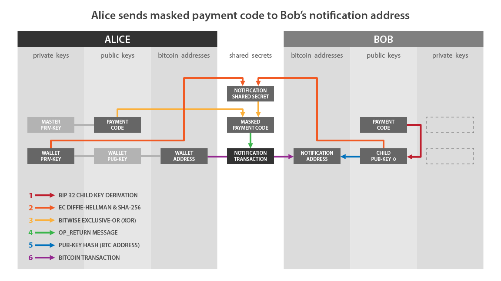
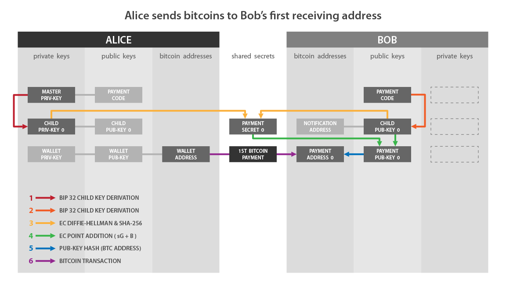
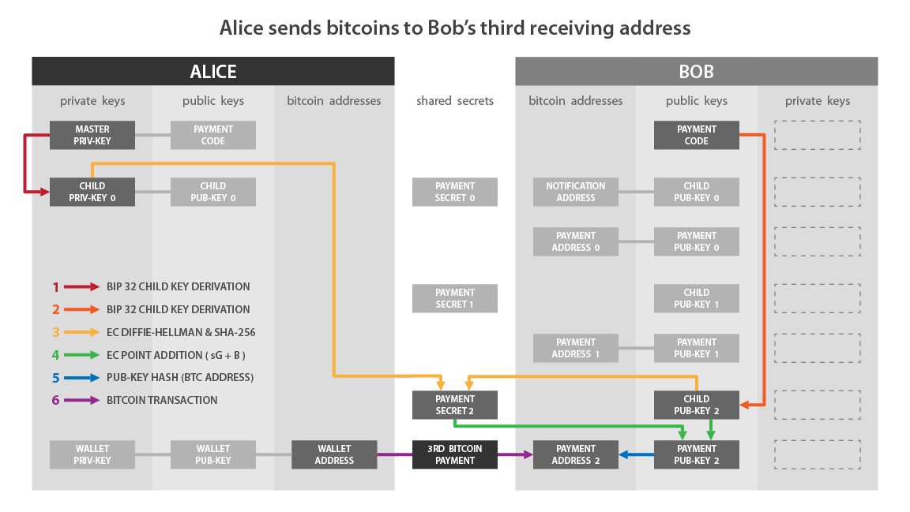
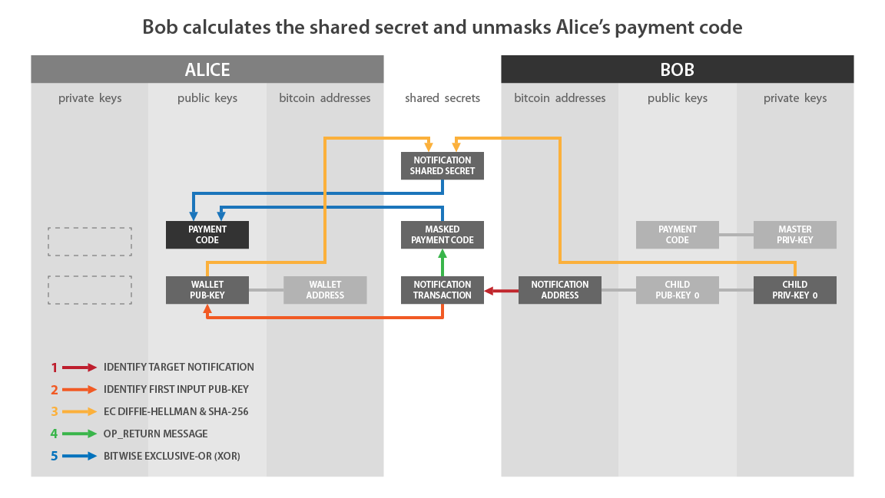
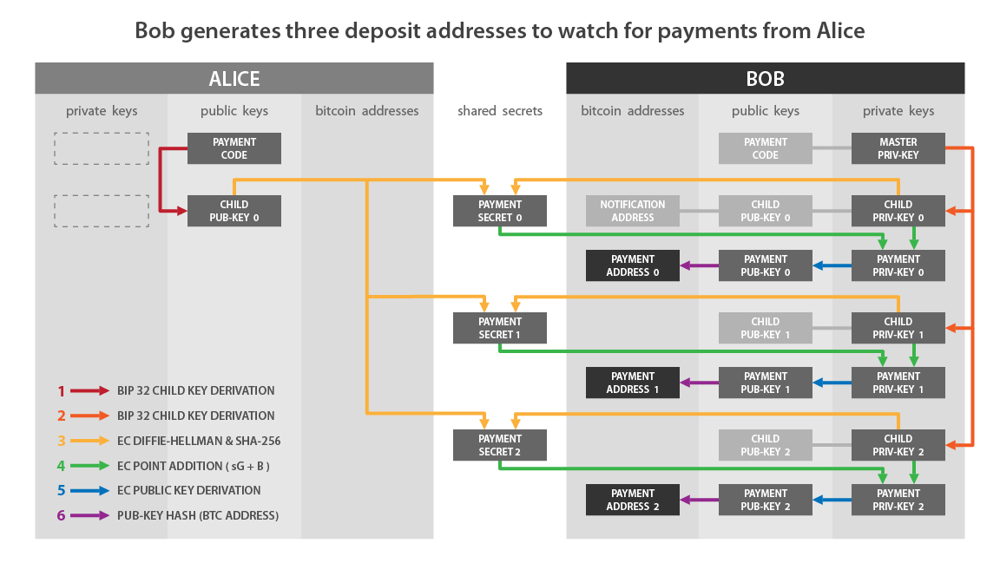
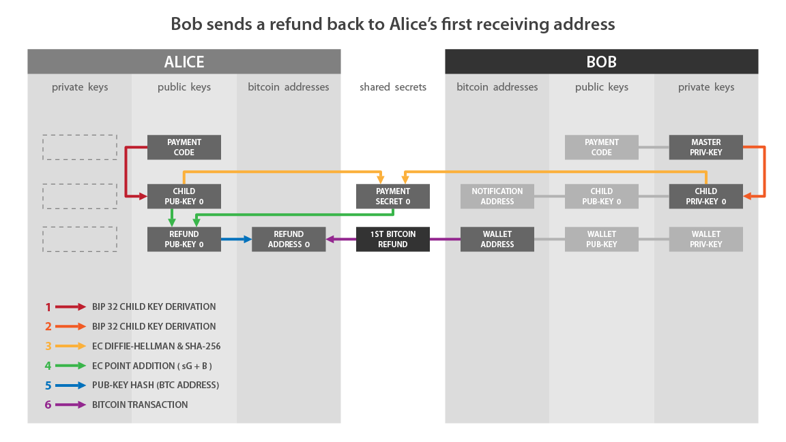

BIP 47
Status
This BIP can be considered final in terms of enabling compatibility with wallets that implement version 1 and version 2 reusable payment codes, however future developments of the reusable payment codes specification will not be distributed via the BIP process.
The Open Bitcoin Privacy Project RFC repo should be consulted for specifications related to version 3 or higher payment codes: https://github.com/OpenBitcoinPrivacyProject/rfc
Abstract
This BIP defines a technique for creating a payment code which can be publicly advertised and associated with a real-life identity without creating the loss of security or privacy inherent to P2PKH address reuse.
This BIP is a particular application of BIP43 and is intended to supplement HD wallets which implement BIP44.
The key words “MUST”, “MUST NOT”, “REQUIRED”, “SHALL”, “SHALL NOT”, “SHOULD”, “SHOULD NOT”, “RECOMMENDED”, “MAY”, and “OPTIONAL” in this document are to be interpreted as described in RFC 2119.
Motivation
Payment codes add identity information to transactions which is useful in a merchant-customer interaction while protecting the privacy of users. Payment codes provide the privacy benefits of Darkwallet-style Stealth Addresses to SPV clients without requiring the assistance of a trusted full node and while greatly reducing reliance on blockchain storage.
Path levels
We define the following 3 levels in BIP32 path:
m / purpose' / coin_type' / identity'
The child keys derived from an identity are used in different ways:
m / purpose' / coin_type' / identity' / 0
The 0th (non-hardened) child is the notification key.
m / purpose' / coin_type' / identity' / 0 through 2147483647
These (non-hardened) keypairs are used for ECDH to generate deposit addresses.
m / purpose' / coin_type' / identity' / 0' through 2147483647'
These (hardened) keypairs are ephemeral payment codes.
Apostrophe in the path indicates that BIP32 hardened derivation is used.
Each level has a special meaning, described in the chapters below.
Purpose
Purpose is a constant set to 47’ (or 0x8000002F) following the BIP43 recommendation. It indicates that the subtree of this node is used according to this specification.
Coin type
The coin type field is identical to the same field in BIP44
Hardened derivation is used at this level.
Identity
The identity derivation level produces an extended public key and its associated extended private key.
When the extended public key at this level is combined with the metadata specified in the Representation section below, the resulting entity is called a “payment code.”
This derivation level is equivalent to the Account level in BIP-44. Wallets SHOULD treat payment codes as intrinsically part of the BIP-44 account at the same index and create payment codes and accounts as pairs.
For example, the payment code created represented by (m / 47’ / 0’ / 0’) is part of the account represented by (m / 44’ / 0’ / 0’).
The second account in a wallet consists of the new account/payment code pair created by using an index of 1 in as the account/identity level of both paths.
Incoming payments received via this specification are equivalent to payments received to BIP-44 addresses, and unspent outputs from both types of addresses can be used as inputs in the same outgoing transaction.
Hardened derivation is used at this level.
Except where noted, all keys derived from a payment code use the public derivation method.
Versions
Payment codes contain a version byte which identifies a specific set of behavior.
Unless otherwise specified, payment codes of different versions are interoperable. If Alice uses a version x payment code, and Bob uses a version y payment code, they can still send and receive transactions between each other.
Currently specified versions:
- Version 1
- Address type: P2PKH
- Notification type: address
- Version 2
- Address type: P2PKH
- Notification type: bloom-multisig
Recommended Versions
- Wallets which have bloom filtering capabilities SHOULD create version 2 payment codes instead of version 1 payment codes.
- Version 1 payment codes are only recommended for wallets which lack access to bloom filtering capability.
Version 1
Representation
Binary Serialization
A payment code contains the following elements:
- Byte 0: version. required value: 0x01
- Byte 1: features bit field. All bits must be zero except where
specified elsewhere in this specification
- Bit 0: Bitmessage notification
- Bits 1-7: reserved
- Byte 2: sign. required value: 0x02 or 0x03
- Bytes 3 - 34: x value, must be a member of the secp256k1 group
- Bytes 35 - 66: chain code
- Bytes 67 - 79: reserved for future expansion, zero-filled unless otherwise noted
Base58 Serialization
When a payment code is presented to the user, it SHOULD be presented encoded in Base58Check form.
- The version byte is: 0x47 (produces a “P” as the first character of the serialized form)
- The payload is the binary serialization of the payment code
Protocol
In the following examples, Alice and Bob are identities with a corresponding payment codes. Alice initiates a Bitcoin transaction, and Bob is the recipient of the transaction.
It is assumed that Alice can easily obtain Bob’s payment code via a suitable method outside the scope of the payment code protocol.
Definitions
- Payment code: an extended public key and associated metadata which is associated with a particular identity/account
- Notification address: the P2PKH address associated with the 0th public key derived from a payment code
- Notification transaction: a transaction which sends an output to a notification address which includes an embedded payment code
- Designated input: the first input in the notification transaction which exposes an secp256k1 pubkey in either its signature script, or in the redeem script or pubkey script of the output being spent
- Designated pubkey: the first secp256k1 pubkey pushed to the stack during script execution for the designated input
- Outpoint: the specific output of a previous transaction which is being spent. See the Reference section for the binary serialization
Notification Transaction
Prior to the first time Alice initiates a transaction to Bob, Alice MUST inform Bob of her payment code via the following procedure:
Note: this procedure is used if Bob uses a version 1 payment code (regardless of the version of Alice’s payment code). If Bob’s payment code is not version 1, see the appropriate section in this specification.
- Alice constructs a transaction which sends a small quantity of
bitcoins to Bob’s notification address (notification transaction)
- The inputs selected for this transaction MUST NOT be easily associated with Alice’s notification address
- Alice derives a unique shared secret using ECDH:
Alice selects the private key corresponding to the designated pubkey: a
Alice selects the public key associated with Bob’s notification address: B, where B = bG
Alice calculates a secret point: S = aB
Alice calculates a 64 byte blinding factor: s = HMAC-SHA512(o, x)
- “x” is the x value of the secret point
- “o” is the outpoint being spent by the designated input
- Alice serializes her payment code in binary form.
- Alice renders her payment code (P) unreadable to anyone except
Bob:
- Replace the x value with x’: x’ = x XOR (first 32 bytes of s)
- Replace the chain code with c’: c’ = c XOR (last 32 bytes of s)
- Alice adds an OP_RETURN output to her transaction which consists of P.

- Bob watches for any transactions which create an output at his notification address.
- When a transaction is received, the client examines it to determine if it contains a standard OP_RETURN output with an 80 byte payload (notification transactions).
- If the first byte of the payload in a notification transaction
is 0x01:
Bob selects the designated pubkey: A, where A = aG
Bob selects the private key associated with his notification address: b
Bob calculates a secret point: S = bA
Bob calculates the blinding factor: s = HMAC-SHA512(x, o)
- “x” is the x value of the secret point
- “o” is the outpoint being spent by the designated input.
Bob interprets the 80 byte payload as a payment code, except:
- Replace the x value with x’: x’ = x XOR (first 32 bytes of s)
- Replace the chain code with c’: c’ = c XOR (last 32 bytes of s)
If the updated x value is a member of the secp256k1 group, the payment code is valid.
If the updated x value is not a member of the secp256k1 group, the payment code is ignored.
Now that Bob’s client has received Alice’s payment code, it is possible for Alice to send payments (up to 232 payments) to Bob.
Alice will never again need to send a notification transaction to Bob.
Bitcoins received via notification transactions require special handling in order to avoid privacy leaks:
- The value of outputs received to notification addresses MUST NOT be displayed to the user as part of their spendable balance.
- Outputs received to notification addresses MUST NOT be used as inputs for any transaction that involve ECDH calculations using any of the user’s payment codes.
- Outputs received to notification addresses MAY be passed through a mixing service before being added to the user’s spendable balance.
- Outputs received to notification addresses MAY be donated to miners using dust-b-gone or an equivalent procedure.
Standard Notification Transaction Scripts
Alice SHOULD use an input script in one of the following standard forms to expose a public key, and compliant applications SHOULD recognize all of these forms.
- P2PK (pay to pubkey)
- P2PKH (pay to pubkey hash)
- Multisig (bare multisig, without P2SH)
- a script which spends any of the above script forms via P2SH (pay to script hash)
Compatible wallets MAY provide a method for a user to manually specify the public key associated with a notification transaction in order to recover payment codes sent via non-standard notification transactions.
Post-Notification Privacy Considerations
Incautious handling of change outputs from notification transactions may cause unintended loss of privacy.
The recipient of a transaction which spends a change output from a prior notification transaction will learn about the potential connection between the sender and the recipient of the notification transaction.
The following actions are recommended to reduce this risk:
- Wallets which support mixing SHOULD mix change outputs from notification transactions prior to spending them
- Wallets which do not support mixing MAY simulate mixing by creating a transaction which spends the change output to the next external BIP44 address
Sending
- Each time Alice wants to initiate a transaction to Bob, Alice
derives a unique P2PKH address for the transaction using ECDH as
follows:
Alice selects the 0th private key derived from her payment code: a
Alice selects the next unused public key derived from Bob’s payment code, starting from zero: B, where B = bG
- The “next unused” public key is based on an index specific to the Alice-Bob context, not global to either Alice or Bob
Alice calculates a secret point: S = aB
Alice calculates a scalar shared secret using the x value of S: s = SHA256(Sx)
- If the value of s is not in the secp256k1 group, Alice MUST increment the index used to derive Bob’s public key and try again.
Alice uses the scalar shared secret to calculate the ephemeral public key used to generate the P2PKH address for this transaction: B’ = B + sG


- Bob is watching for incoming payments on B’ ever since he
received the notification transaction from Alice.
- Bob calculates n shared secrets with Alice, using the 0th public key derived from Alice’s payment code, and private keys 0 - n derived from Bob’s payment code, where n is his desired lookahead window.
- Bob calculates the ephemeral deposit addresses using the same procedure as Alice: B’ = B + sG
- Bob calculate the private key for each ephemeral address as: b’ = b + s


Refunds
Because Bob learns Alice’s payment code as part of the process of receiving a payment, Bob has all the information he needs in order to send a refund to Alice.
A refund transaction is identical to a payment transactions, with only the roles of the participants switches.
Bob MUST send a notification transaction to Alice prior to the first time he sends funds to Alice, even if he has received transactions from her in the past.

Anonymous Payments
If Alice does not want her payment to Bob to be associated with her identity, she generates an ephemeral payment code to use for the transaction.
- Ephemeral payment codes are the hardened children of a payment code, starting from an index of zero.
- An ephemeral payment code SHOULD only be used for a single outgoing payment.
- The notification address of an ephemeral payment code MUST be monitored for notification transactions in order to detect incoming refund payments
- The correspondence between BIP44 accounts and ephemeral payment codes is 1:many
Cold Storage
- Unlike traditional watching-only wallets, those associated with payment codes held in cold storage can not detect incoming payments immediately.
- When the watching-only wallet detects an incoming notification transaction, it packages the transaction in an implementation-specific format suitable for transfer to the offline device.
- The offline device recovers the payment code, then pre-generates a large number of relevant keypairs (example: 10000) in order to minimize the need for air gap round trips.
- The offline device then packages the relevant public keys in an implementation-specific format suitable for transfer to the online device.
- The online device can then watch for incoming payments using a suitable lookahead window.
- If the lookahead window reaches the end of the pre-generated public keys, the user must generate more keys on the offline device and transfer them to the online device.
Wallet Recovery
Normal operation of a payment code-enabled wallet can be performed by an SPV client and does not require access to a complete copy of the blockchain.
Recovering a wallet from a seed, however, does require access to a fully-indexed blockchain.
The required data may be obtained from copy of the blockchain under the control of the user, or via a publicly-queryable blockchain explorer.
When querying a public blockchain explorer, wallets SHOULD connect to the explorer through Tor (or equivalent) and SHOULD avoid grouping queries in a manner that associates ephemeral addresses with each other.
Previously-spendable funds will generally not be lost or become inaccessible after a recovery from a seed, but all information regarding previous outgoing payments will be lost.
In order to recover received funds from a seed, the wallet must obtain every notification it has ever received to its notification address, including all spent transactions. It then re-establishes its lookahead window for each subchain by scanning every derived address sequentially until it locates a contiguous block of unused addresses of a user-specified length.
The metadata which a wallet must store to properly process outgoing transactions consists of:
- A list of every payment code to which the identity has sent a
notification transaction.
- This list is lost if a wallet must be recovered from a seed.
- The recovered wallet MUST send notification transactions as if it was a newly-created wallet
- The index value corresponding to the next unused pubkey for
each payment code on the previous list
- This value can be recovered by checking each ephemeral deposit address in sequence for transactions.
- Wallets MAY use a lookahead window capable of detecting gaps in the address sequence during this recovery operation.
- The index value of the next unused ephemeral payment code.
- Recovering all incoming funds associated with ephemeral
payment codes with 100% certainty requires exhausting the entire
232 address space of potential ephemeral payment codes.
- In most cases, less than 100% certainty is acceptable as long as a fallback “deep scan” is available as an option to the user.
- The wallet checks the notification address for each ephemeral payment code for notification transactions in order to recover associated funds.
- Since most ephemeral payment codes will not receive a refund transaction wallets SHOULD use a large lookahead window for this recovery operation.
- The recovered value MUST be chosen as a number higher than any ephemeral payment code which has received a notification transaction.
- Recovering all incoming funds associated with ephemeral
payment codes with 100% certainty requires exhausting the entire
232 address space of potential ephemeral payment codes.
Wallet Sharing
Wallets using payment codes generally should not be shared across multiple devices, given the need to synchronize metadata between each instance.
If wallets are shared between devices without a synchronization mechanism, undesirable address reuse can occur.
Wallets may perform an OPTIONAL check for existing transactions to an ephemeral deposit addresses prior to sending a transaction by checking a local copy of the blockchain or querying a public blockchain explorer via Tor or equivalent.
Alternate Notification Methods
In order to ensure that no funds will be lost in the event the recipient must recover their wallet from a seed, the sender MUST send a notification transaction the first time the sender interacts with a particular recipient.
A recipient MAY choose to designate alternate notification methods which the sender may use in addition to a notification transaction.
If the recipient specifies an alternate notification method, a compliant implementation MAY refrain from continually monitoring the notification address and SHOULD check the notification address periodically to detect payments sent by users who can not employ the alternate method.
A recipient specifies their preference for alternate notification by setting the appropriate bits in the feature byte of their payment code.
Bitmessage Notification
A recipient which prefers to receive notifications via Bitmessage indicates this preference by:
- Setting bit 0 of the features byte to 1
- Setting byte 67 of the serialized payment code to the desired Bitmessage address version
- Setting byte 68 of the serialized payment code to the desired Bitmessage stream number
The sender uses this information to construct a valid notification Bitmessage address:
- Derive a Bitmessage signing key as: B = payment code / 0 / 0
- Initialize a counter at 1: n
- Derive a candidate encryption key as: B’ = payment code / 0 / n
- If the combination of B and B` do not form a valid Bitmessage address, increment n by one and try again
- Use the address version, signing key, encryption key, and stream number to construct a Bitmessage address per the Bitmessage protocol
The sender transmits their payment code in base58 form to the calculated Bitmessage address.
In order to use Bitmessage notification, the recipient must have a Bitmessage client which listens at the address which the senders will derive and is capable of relaying received payment codes to the Bitcoin wallet.
Version 2
Version 2 payment codes behave identifically to version 1 payment codes, except as modified below.
Representation
Binary Serialization
- Byte 0: version. required value: 0x02
Protocol
Definitions
- Notification change output: the change output from a notification transaction which resides in the sender’s wallet, but can be automatically located by the intended recipient
- Payment code identifier: a 33 byte representation of a payment code constructed by prepending 0x02 to the SHA256 hash of the binary serialization of the payment code
Notification Transaction
Note: this procedure is used if Bob uses a version 2 payment code (regardless of the version of Alice’s payment code). If Bob’s payment code is not version 2, see the appropriate section in this specification.
- Construct a notification transaction as per the version 1 instructions, except do not create the output to Bob’s notification address
- Create a notification change address as follows:
- Obtain the pubkey corresponding to the next change address
- Construct a multisig output in the form:
OP_1 <Bob's payment code identifier> <change address pubkey> OP_2 OP_CHECKMULTISIGThe relative ordering of the payment code identifier and change address pubkey in the above script MAY be randomized
Bob detects notification transactions by adding his payment code identifier to his bloom filter.
- When the filter returns a notification transaction, the sender’s payment code is unblinded using the same procedure as for version 1 notification transactions.
Alice’s wallet should spend the notification change output at the next appropriate opportunity.
Test Vectors
Reference
- BIP32 - Hierarchical Deterministic Wallets
- BIP43 - Purpose Field for Deterministic Wallets
- BIP44 - Multi-Account Hierarchy for Deterministic Wallets
- Outpoint
- dust-b-gone
- Base58Check encoding
- Bitmessage
- Mailing list discussion
Changelog
- 2021-02-15:
- Finalize specification
- 2017-09-28:
- Adjust text to match test vectors
- 2016-04-19:
- Define version 2 payment codes
BIP: 352
Layer: Applications
Title: Silent Payments
Authors: josibake <josibake@protonmail.com>
Ruben Somsen <rsomsen@gmail.com>
Sebastian Falbesoner <sebastian.falbesoner@gmail.com>
Status: Complete
Type: Specification
Assigned: 2023-03-09
License: BSD-2-Clause
Discussion: 2022-03-13: https://gist.github.com/RubenSomsen/c43b79517e7cb701ebf77eec6dbb46b8 [gist] Original proposal
2022-03-28: https://gnusha.org/pi/bitcoindev/CAPv7TjbXm953U2h+-12MfJ24YqOM5Kcq77_xFTjVK+R2nf-nYg@mail.gmail.com/ [bitcoin-dev] Silent Payments – Non-interactive private payments with no on-chain overhead
2022-10-11: https://gnusha.org/pi/bitcoindev/P_21MLHGJicZ-hkbC4DGu86c5BtNKiH8spY4TOw5FJsfimdi_6VyHzU_y-s1mZsOcC2FA3EW_6w6W5qfV9dRK_7AvTAxDlwVfU-yhWZPEuo=@protonmail.com/ [bitcoin-dev] Silent Payment v4 (coinjoin support added)
2023-08-04: https://gnusha.org/pi/bitcoindev/ZM03twumu88V2NFH@petertodd.org/ [bitcoin-dev] BIP-352 Silent Payments addresses should have an expiration time
Version: 1.1.1
Requires: 340, 341, 350